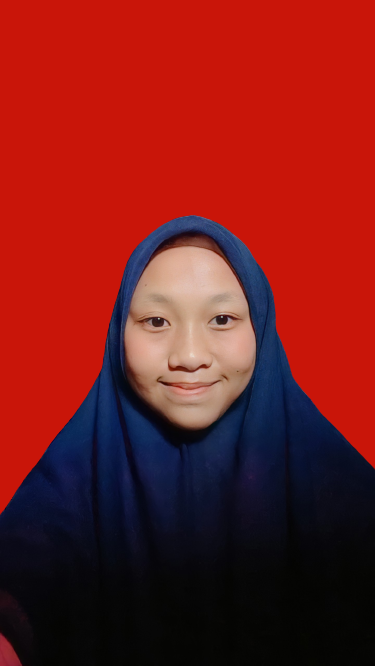

Curriculum Vitae

Ira Kusuma Wardani
Tempat Tanggal Lahir : Jakarta, 20 Januari 2002
Alamat : Perumahan Alam Parung Jl. Melati Blok I2 No 3 RT 08/07 Kec. Ciseeng Kab. Bogor
Agama : Islam
Kebangsaan : Indonesia
Telepon : 081234567890
Jurusan : Teknik Informatika
NIM : 0110221016
Email : irakusumawardani20@gmail.com
Pendidikan
SD I AL-MUKHLISHIN 2008-2014
SMP I TI HARAPAN 2014-2017
MA AL-MUKHLISHIN 2017-2020
Pengalaman Kerja
Bimba Rainbow Kids, Sebagai Guru
Medical Terapi, Sebagai Staff Consltant
Salon dan Studio, Sebagai Beautician
Pengalaman Organisasi
Paskibra : Pengibaran Bendera Merah Putih HUT RI Ke-72 Tingkat Kecamatan Ciseeng 2018